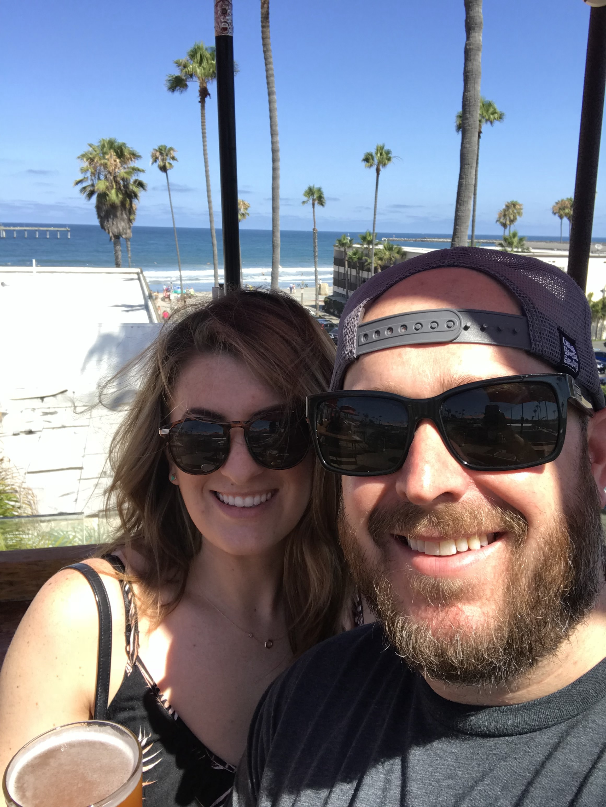

More About Me
I am a Colorado native. I grew up in Lyons Colorado and attended Lyons Middle/Senior High. My senior year our high school football team made the 1A state championship game. I had a great high school experience, and this is what ultimately lead me to pursuing a career in education. I went to Colorado State University and earned a BS in Mathematics. At the end of college I met Caitlin, my beautiful wife. I started teaching math and coaching at Thompson Valley High School in Loveland Colorado.

I completed my MS in Administration from CSU, and wound up finding a job in Denver at Manual High School where I taught math and joined their leadership team. After four rewarding years at Manual, I took a administrative position at Bennett School District where I eventually earned the Bennett Middle School Principal position. My whole life I have had a passion for technology. As a hobby I have built computers for myself and friends.
As I got more and more into building computers I started exploring programming. One of the first books I remember reading was “How to Automate the Boring Stuff” by Al Sweigart. I was hooked, and extremely lucky to have a wife who supports me in pursuing my passion. In the spring of 2016 I started taking night courses and actively working towards changing careers. It has been very challenging, and even more rewarding. I am excited to see what the future brings!
